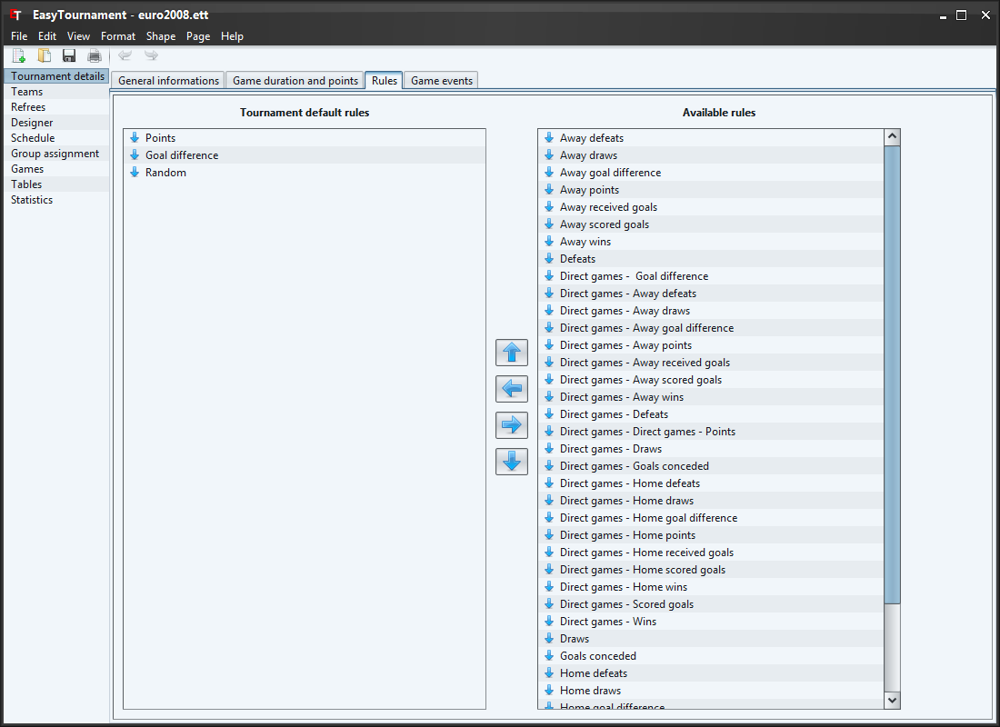

On this screen you can set the rules of the ordering of the tables.
With the big arrows or by drag and drop of the rules you are able to add the available rules on the right side to the used ones on left side. The topmost rule is the one that will be used first to sort a table.
With a double-click or by selecting the corresponding entry in the context menu (right mouse button) you can set if the rule should be applied ascending or descending (e.g. the down-arrow means descending. This means that the team with the most points is at position 1 of the table).